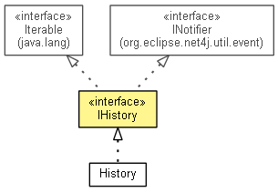

org.eclipse.net4j.util.collection
Interface IHistory<T>
- All Superinterfaces:
- INotifier, Iterable<IHistoryElement<T>>
- All Known Implementing Classes:
- History, PreferenceHistory
- public interface IHistory<T>
- extends INotifier, Iterable<IHistoryElement<T>>

isEmpty
boolean isEmpty()
size
int size()
clear
boolean clear()
indexOf
int indexOf(T data)
add
boolean add(T data)
remove
IHistoryElement<T> remove(int index)
get
IHistoryElement<T> get(int index)
getMostRecent
T getMostRecent()
getData
<D> D[] getData(D[] a)
toArray
IHistoryElement<T>[] toArray()
Copyright (c) 2004 - 2012 Eike Stepper (Berlin, Germany) and others.